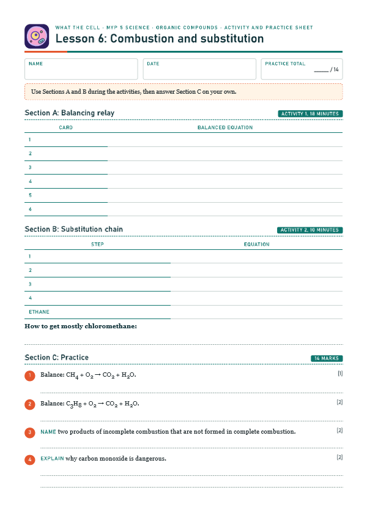

By the end of the lesson you can
- Write balanced equations for the complete combustion of alkanes
- Compare complete and incomplete combustion
- Explain why alkenes burn with a smokier flame
- Describe the substitution reaction of alkanes with chlorine
Keys: arrows or a presentation clicker move the slides, F for full screen. Slides with a red dot have a video or simulation.
Videos (all 5 minutes or less)
- 3:56
Complete and Incomplete Combustion
FuseSchool. While you watch: What are the products of complete combustion? Slide 9.
Simulations
- Lab
- PhET
PhET Balancing Chemical Equations
PhET, University of Colorado Boulder. Try the tasks on the simulation slide.
Print and practise

Activity and practice sheet
Used in the lesson’s activities, with practice questions. Your teacher has the answers.
Download (PDF)Lesson 6 slides
All 19 slides in one file, to read again or print. The video buttons on the slides open YouTube.
Download the slides (PDF)Revising? The Revision tab on the unit page has the unit notes and review.
Class activity pack
Everything to print for the lesson’s activities: picture cards, sorting mats, station cards with their kit lists, and the teacher’s set-up notes. Print it before class.
Download the activity pack (PDF)Notes: Combustion and substitution
complete combustion
The fuel burns in plenty of oxygen; every C becomes CO2 and every H becomes H2O. For example: propane: C3H8 + 5O2 -> 3CO2 + 4H2O.
incomplete combustion
Burning with too little oxygen: some carbon ends up as carbon monoxide or soot instead of carbon dioxide. For example: a blocked heater flue, a yellow gas flame.
ratio of C to H
Ethane has 3 H for each C; ethene has only 2; the more carbon in a fuel for its hydrogen, the more soot it tends to make. For example: why alkenes are not used as fuels.
substitution reaction
One atom or group in a molecule is replaced by another; alkanes react with halogens this way in UV light. For example: CH4 + Cl2 -> CH3Cl + HCl.
Key words
| combustion | a fuel reacting with oxygen |
|---|---|
| complete combustion | products: CO2 and H2O only |
| incomplete combustion | CO and soot form when oxygen is short |
| carbon monoxide | a poisonous, colourless, odourless gas |
| substitution | one atom replacing another |
| UV light | needed for alkanes to react with chlorine |
| balanced equation | the same atoms on both sides |